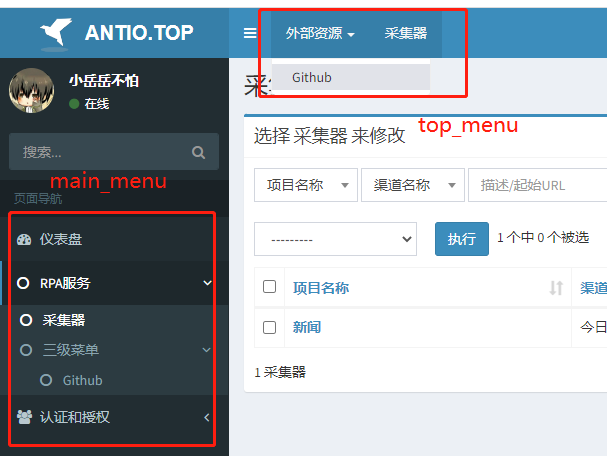
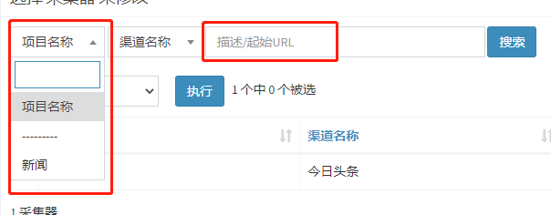
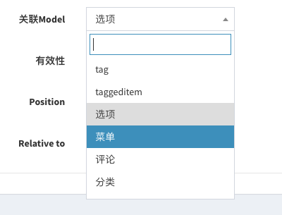
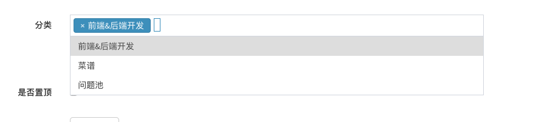

指南
简单的示例
通过继承adminlte.core.AdminlteConfig，并在django的settings中添加配置实现
继承AdminlteConfig
adminlte_config.py
# myserver/utils/adminlte_config.py
from adminlteui.core import AdminlteConfig
class MyAdminlteConfig(AdminlteConfig):
skin = 'red'
welcome_sign = '欢迎访问xxx后端系统'
...
django中settings配置
参数详解
基础信息
show_avatar
是否显示头像，默认为False
avatar_field
头像对应的url或者用户头像字段，默认为None，将渲染为adminlteui/static/admin/dist/img/default.jpg
username_field
用户名显示，默认为None，将渲染为request.user.username
site_logo
站点logo，默认为None，将渲染为adminlteui/static/admin/dist/img/default-log.svg
skin
站点主题，默认为None，将渲染为blue
sidebar_layout
侧边栏布局，默认为fixed，可选：['boxed', 'fixed']
search_form
是否显示搜索框，默认为True
copyright
版权，默认为None，将渲染为django-adminlte-ui版本号
welcome_sign
欢迎标志（登录页），默认为None，将渲染为芝麻开门
菜单
菜单通过继承adminlte.core.MenuItem实现，可对左侧菜单及顶部菜单进行自定义
MenuItem有三种menu_type
- group：分组，用于将多个
model或link类型的MenuItem显示到同一级菜单中 - model：通过
label绑定通过admin中注册的model页面，label命名规则app_label.modelName - link：普通链接类型，直接通过url指定链接
示例
adminlte_config.py
from adminlte.core import MenuItem
class MyAdminlteConfig(AdminlteConfig):
main_menu = [
MenuItem(label='rpa', name='RPA服务', child=[
MenuItem(label='rpa.Collector', menu_type='model'),
MenuItem(label='third', name='三级菜单', child=[
MenuItem(label='github', name='Github', url='https://github.com/wuyue92tree', target_blank=True, menu_type='link'),
]),
]),
MenuItem(label='auth', name='认证和授权', icon='fa-users', child=[
MenuItem(label='auth.User', name='用户', menu_type='model'), # (1)
MenuItem(label='auth.Group', name='组', menu_type='model'),
]),
]
top_menu = [
MenuItem(label='outside_link', name='外部资源', child=[
MenuItem(label='github', name='Github', url='https://github.com/wuyue92tree', target_blank=True, menu_type='link'),
]),
MenuItem(label='rpa.Collector', menu_type='model'),
]
效果图

- menu_type类型为model时，若不指定name，则默认显示为原model的verbose_name
main_menu
主菜单（左侧菜单），默认为[]，将渲染为所有已注册到admin中的model
Tips: 可实现多级菜单
top_menu
顶部菜单，默认为[]，将渲染为空
Tips: 顶部菜单将不显示Icon，并且最多显示二级菜单，多余的将被隐藏
ModelAdmin
扩展django的ModelAdmin
- 让
change_list页面的table过滤器支持select2 - 自定义
change_list页面搜索框的placeholder提示
示例
admin.py
from adminlte.admin import ModelAdmin
class CollectorModelAdmin(ModelAdmin):
select2_list_filter = ('project', 'source') # (1)
search_field_placeholder = '描述/起始URL' # (2)
...
- 将需要使用select2的筛选fields加入该tuple中
- 将待显示的搜索框提示信息赋值
效果图

Widgets组件
AdminlteSelect
自 v1.5.0b0 版本之后, 将不再需要通过template覆盖的方式激活select2.
示例:
rpa/admin.py
效果图:
@admin.register(Collector)
class CollectorAdmin(admin.ModelAdmin):
...
formfield_overrides = {
models.ForeignKey: {'widget': AdminlteSelect}
}

AdminlteSelectMultiple
自 v1.5.0b0 版本之后, 将不再需要通过template覆盖的方式激活select2.
示例:
rpa/admin.py
效果图:
@admin.register(Collector)
class CollectorAdmin(admin.ModelAdmin):
...
formfield_overrides = {
# multiple for ManayToManyField
models.ManayToManyField: {'widget': AdminlteSelectMultiple(
attr={'style': 'width: 100%'}
)}
}
